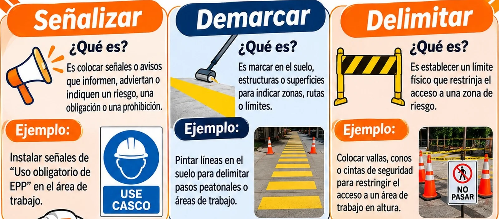
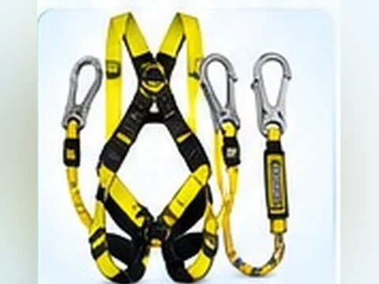
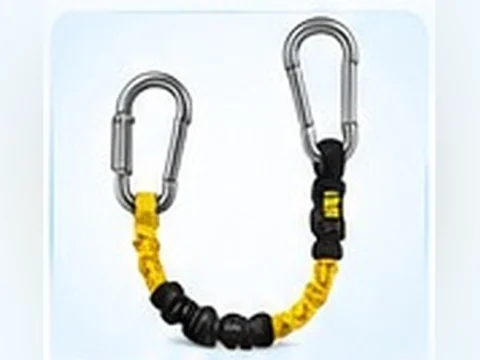
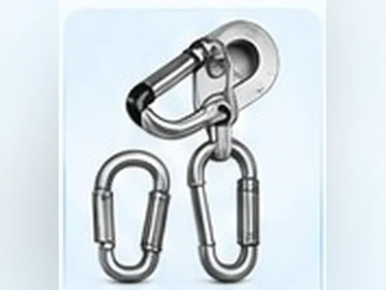
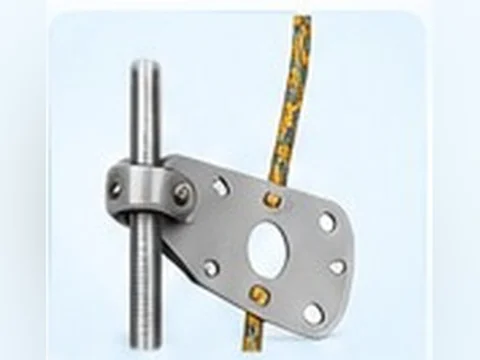
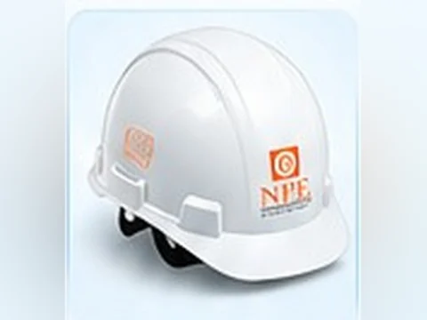
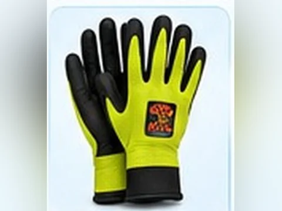
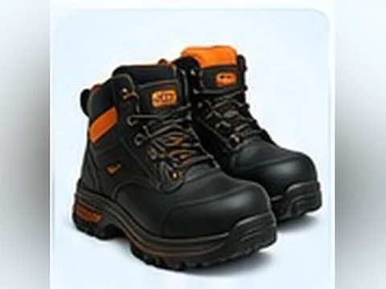
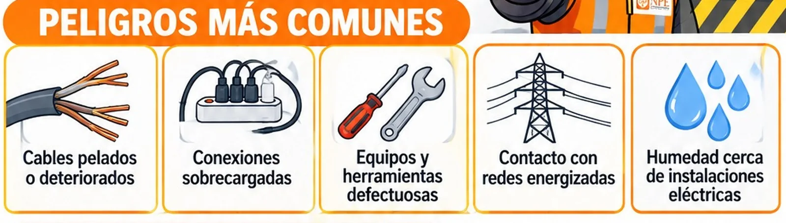

Parte 1
Prevención y preparación antes de subir
Cubre los pasos 1 a 7 del procedimiento. Ver en YouTube (se abre en otra pestaña)
Preparación y ejecución de una tarea en alturas en postes de telecomunicaciones: requisitos de la Resolución 4272 de 2021, sistemas de protección contra caídas, inspección de equipos, permiso de trabajo, control del área, riesgo eléctrico y respuesta a una caída detenida.
Material de apoyo formativo. Complementa la capacitación y el entrenamiento certificados que exige la Resolución 4272 de 2021; no reemplaza la formación, la autorización, el permiso de trabajo ni los procedimientos de NPE. No enseña técnicas de ascenso, maniobras de rescate ni intervención de redes eléctricas. Los anclajes y el espacio libre de caída los define una persona calificada con la ficha del fabricante.
Al terminar este módulo, el técnico estará en capacidad de:
La Resolución 4272 de 2021 del Ministerio del Trabajo fija los requisitos mínimos: programa de prevención y protección contra caídas, roles, medidas de prevención y protección, permiso de trabajo, plan de emergencias y capacitación. Se aplica dentro del Sistema de Gestión de Seguridad y Salud en el Trabajo.
Roles que intervienen en una tarea y formación mínima de cada uno:
| Rol | Qué hace en la tarea | Formación mínima |
|---|---|---|
| Coordinador de trabajo en alturas | Identifica los peligros en el sitio y puede aplicar medidas correctivas inmediatas. | 80 horas (art. 27) |
| Trabajador autorizado | Trabaja en alturas con concepto médico apto y certificado de capacitación o de competencia vigente. | 32 horas (art. 27) |
| Ayudante de seguridad | Trabajador autorizado que revisa las condiciones del sitio y controla el acceso a las zonas de riesgo. | La del trabajador autorizado, con reentrenamiento vigente |
| Jefes de área | Toman las decisiones administrativas sobre el programa. | 8 horas (art. 27) |
El reentrenamiento se exige cuando cambian las condiciones técnicas, tecnológicas o laborales, la actividad o los procedimientos, y al ingresar como trabajador nuevo (art. 27). El programa lo administra un profesional en SST con licencia vigente y curso de coordinador.
Serie Seguridad · Trabajo en alturas, producida por NPE, en dos partes con narración y subtítulos. La primera ocurre en tierra, antes de subir: normas, roles, peligros, equipos, inspección y permiso. La segunda sigue una jornada de trabajo en un poste, desde la demarcación del área hasta el cierre, incluida la respuesta a una caída. Las ilustraciones son del área HSQ de NPE.
Cubre los pasos 1 a 7 del procedimiento. Ver en YouTube (se abre en otra pestaña)
Cubre los pasos 8 a 16 del procedimiento. Ver en YouTube (se abre en otra pestaña)
Secuencia de referencia para una tarea en alturas en poste. Los pasos siguen el orden de los capítulos de los dos videos.
Antes de subir: ¿los peligros están identificados y controlados? ¿Los equipos están inspeccionados? ¿El ATS y el permiso están firmados? ¿El plan de rescate está listo? Una sola respuesta negativa impide iniciar el trabajo hasta que la condición se corrija.
Datos que los videos no desarrollan: qué exige la norma, cuánto debe resistir un anclaje, cuánto espacio necesita una caída y qué hacer cuando el sistema actúa. El tema completo está en las guías de la parte 1 y de la parte 2 (PDF).
La Resolución 4272 de 2021 define el trabajo en alturas a partir de un riesgo de caída mayor a 2,0 m, medido desde el plano de los pies del trabajador hasta el plano horizontal inferior más cercano. Su artículo 68 derogó las resoluciones 1409 de 2012, 1903 de 2013, 3368 de 2014, 1178 de 2017 y 1248 de 2020.
La resolución tampoco lo resuelve todo: no fija distancias a redes eléctricas, un umbral de viento o lluvia para suspender ni un valor único de espacio libre de caída. Esos criterios salen del RETIE, del procedimiento de NPE y de la ficha del fabricante.
En campo: un formato, un ATS o una pieza gráfica que cite la 1409 como vigente se actualiza. Por debajo de 2,0 m la tarea no es trabajo en alturas según la norma, pero el riesgo de caída sigue existiendo y se controla con el ATS.
La resistencia mínima del anclaje depende del sistema que se conecta a él. La máxima fuerza de detención que el sistema puede transmitir al cuerpo del trabajador es de 1.800 lb (8 kN).
| Sistema | Anclaje mínimo por persona | Condición |
|---|---|---|
| Restricción | 1.000 lb (art. 20) | Mantiene 60 cm entre el borde y el trabajador. |
| Posicionamiento | 3.000 lb (art. 21) | Caída libre no mayor a 60 cm; con riesgo de caída, se usa junto con detención anclada aparte. |
| Detención de caídas | 5.000 lb, 22,2 kN (art. 23) | O diseño de una persona calificada; ubicado para evitar el efecto péndulo. |
En campo: no son anclaje las barandas (art. 13), las estructuras sin certificación, los cables de otros operadores ni los herrajes de la red eléctrica. Si no hay un anclaje autorizado para la tarea, el trabajo no se inicia.
Para que la detención funcione, debajo del trabajador debe quedar espacio suficiente para que el sistema actúe antes del impacto. Se mide desde el anclaje y suma la longitud de la eslinga, la apertura del absorbedor, la estatura del trabajador con el arnés y un margen de seguridad.
Eslinga de 1,80 m + apertura del absorbedor de 1,20 m + estatura con el arnés de 1,50 m + margen de 1,00 m = 5,50 m bajo el anclaje.
Valores supuestos. Los reales salen de la ficha del fabricante de cada equipo.
Si el anclaje queda desplazado una distancia horizontal B y la conexión tiene longitud A, la caída agrega aproximadamente ΔC = √(A² + B²) − A, además del golpe lateral contra la estructura.
Con A = 1,80 m y B = 1,50 m: √(3,24 + 2,25) − 1,80 = 2,34 − 1,80 = 0,54 m adicionales.
Estimación geométrica simplificada con fines didácticos.
En campo: el anclaje se ubica lo más cerca posible de la vertical sobre el punto de trabajo. Si el espacio bajo el anclaje no alcanza, se cambia el anclaje o el equipo; el cálculo lo valida una persona calificada con la ficha del fabricante.
El artículo 13 pide demarcar con cuerdas, vallas, cintas o conos amarillos y negros, visibles de día y de noche, y delimitar los pasos peatonales; avisos del peligro de caída de personas y objetos en español, y mecanismos que controlen el ingreso. Las barandas miden al menos 1 m y nunca se usan como anclaje ni para izar cargas.

En campo: la demarcación se mantiene hasta el cierre de la actividad. Si hay que dejar pasar peatones, el paso se desvía por fuera; la cinta no se levanta mientras haya alguien trabajando arriba.
La inspección la hace el usuario antes de cada uso y queda en la hoja de vida del equipo. Cualquiera de estas señales retira el equipo:
| Punto | Qué se busca |
|---|---|
| Cintas del arnés | Cortes, quemaduras, decoloración, rigidez o contaminación química. |
| Costuras | Hilos rotos, sueltos o desgastados; indicadores de impacto activados. |
| Hebillas y argollas | Deformación, corrosión, fisuras o bordes cortantes. |
| Absorbedor de energía | Señales de apertura o funda rota. |
| Mosquetones y ganchos | Cierre que no regresa solo o no asegura; deformación. |
| Etiqueta | Ilegible o ausente: sin fabricante, fecha o norma no hay trazabilidad. |
Los equipos se guardan limpios y secos, lejos del sol directo, del calor, de químicos y de bordes cortantes. Un arnés guardado mojado o junto a combustibles se degrada aunque no se use.
En campo: un equipo que detuvo una caída sale de la operación hasta el aval del fabricante o de una persona calificada (art. 22, parágrafo 1), aunque se vea bien. Se registra en su hoja de vida.
Cuando el sistema actúa, la caída se detiene pero el trabajador queda suspendido en el arnés. Inmóvil y en posición vertical puede desarrollar intolerancia ortostática (trauma por suspensión): la sangre se acumula en las piernas y disminuye el flujo hacia el cerebro. La OSHA advierte que puede producir inconsciencia, seguida de muerte, en menos de 30 minutos. Señales: mareo, náuseas, visión borrosa, debilidad y desmayo.
| # | Acción | Detalle |
|---|---|---|
| 1 | Activar el plan de emergencias | La persona de apoyo reporta de inmediato (art. 26). |
| 2 | Rescatar sin demora | Con el personal y los equipos previstos en el plan. |
| 3 | Valorar y atender | Primeros auxilios y servicios de emergencia según el caso. |
| 4 | Retirar el equipo de servicio | Hasta el aval del fabricante o de una persona calificada. |
| 5 | Reportar e investigar | Según el procedimiento de reporte de incidentes. |
En campo: el plan de rescate se confirma antes de subir: quién rescata, con qué equipo y por qué procedimiento. Si el rescate no está disponible, el trabajo no se inicia.
Función de cada elemento y cuándo se retira de servicio. Ilustraciones de la infografía de HSQ de NPE.

Arnés de cuerpo completoDistribuye la fuerza de la detención en el cuerpo. Talla correcta y argollas según el sistema: dorsal, laterales o pectoralSe retira si tiene cintas cortadas, quemadas, decoloradas o rígidas, costuras rotas o indicadores de impacto activados.

Eslinga con absorbedor de energíaConecta el arnés al anclaje y disipa la energía de la caída. Longitud y apertura compatibles con el espacio libreSe retira si el absorbedor muestra señales de apertura, aunque sea parcial, o la funda está rota.

Conectores y mosquetonesUnen los componentes del sistema. Cierre de seguridad automático y resistencia certificadaSe retira si el cierre no regresa solo o no asegura, o hay deformación, corrosión o fisuras.

Puntos de anclaje y línea de vidaPunto seguro al que se conecta el sistema, autorizado para la tarea. En detención, 5.000 lb por personaSe retira si no está certificado o verificado, o es una baranda, un cable de otro operador o un herraje de la red eléctrica.

Casco con barbuquejoProtege la cabeza; el barbuquejo evita que se caiga en el ascenso o en una caída. Dieléctrico si hay riesgo eléctrico
Guantes de seguridadProtegen las manos. Se eligen según el peligro: corte, abrasión o riesgo eléctrico
Calzado antideslizanteProtege los pies y da apoyo firme en la escalera y el terrenoTodo equipo de protección contra caídas cuenta con certificado de conformidad del fabricante. Mezclar componentes de fabricantes distintos sin verificar su compatibilidad, modificar equipos o usar elementos artesanales invalida la certificación del sistema. Una etiqueta ilegible o ausente retira el equipo hasta verificarlo.

| Peligro | Severidad | Control |
|---|---|---|
| Caída a diferente nivel | Crítica | Sistema de protección definido para la tarea y conectado en el ascenso, el trabajo y el descenso, con anclaje autorizado y espacio libre verificado. |
| Estructura en mal estado | Crítica | Revisar fisuras, inclinación, corrosión y base. Con daño no se asciende: se reporta al coordinador y al propietario de la infraestructura. |
| Contacto eléctrico o arco en postes compartidos | Crítica | Identificar las redes del poste, mantener las distancias del RETIE y del procedimiento eléctrico, no intervenir la red y alejar los elementos conductores. |
| Suspensión prolongada tras una caída detenida | Crítica | Plan de rescate escrito, practicado y verificado; persona de apoyo disponible; rescate sin demora (art. 26). |
| Caída de objetos | Alta | Herramientas aseguradas, cuerda de servicio, nada se lanza, zona demarcada debajo y casco con barbuquejo arriba y abajo. |
| Tránsito vehicular y peatonal | Alta | Demarcación amarilla y negra, avisos y control de acceso; el paso peatonal se desvía por fuera. |
| Lluvia, tormenta eléctrica o viento | Alta | Criterio de suspensión del procedimiento de NPE. Con tormenta eléctrica se desciende y se suspende. |
| Terreno inestable | Media | Apoyo de la escalera firme y nivelado; si no lo es, se cambia el punto de apoyo o el sistema de acceso. |
| Obstáculos: ramas, cables de otros operadores, cajas abiertas | Media | Despejar o rediseñar la maniobra antes de subir. |
Condiciones que impiden empezar o que obligan a detener el trabajo, con la decisión y a quién se informa. El reporte queda registrado.
| Condición | Decisión | Se informa a |
|---|---|---|
| Equipo defectuoso o sin inspección | No se usa; se retira de servicio. | Coordinador de trabajo en alturas |
| Anclaje sin verificar o no certificado | No se conecta; se define otro anclaje autorizado. | Coordinador |
| Falta un sistema de protección requerido | No se inicia. | Coordinador y supervisor |
| Riesgo eléctrico sin controles | No se inicia. | Coordinador; procedimiento eléctrico |
| Tormenta eléctrica, lluvia fuerte o viento | No se inicia o se suspende según el procedimiento. | Coordinador |
| Falta personal requerido o autorización | No se inicia. | Supervisor |
| Cambian las condiciones del entorno | Se detiene y se revalida el permiso. | Coordinador |
Una pregunta por cada clave técnica y dos casos más de las guías. Respóndalas y luego ábralas para comprobar.
A 1,5 m la tarea no entra en la definición de la Resolución 4272, que empieza en un riesgo de caída mayor a 2,0 m. El riesgo de caída sigue existiendo y se controla con el ATS y las medidas que defina el procedimiento de NPE.
No. El cable no es un anclaje autorizado ni certificado para detención de caídas. Se usa el anclaje definido para la tarea; si no existe, el trabajo no se inicia.
Unos 0,54 m: √(1,8² + 1,5²) − 1,8 = 2,34 − 1,80. A eso se suma el golpe lateral contra la estructura, y la distancia se suma al espacio libre requerido.
Se vuelve a demarcar. La zona de caída de objetos no puede quedar abierta: el paso se desvía por fuera y la demarcación permanece hasta el cierre (art. 13).
No. El absorbedor actuó, total o parcialmente. La eslinga se retira de servicio, se registra en su hoja de vida y no vuelve a usarse sin el aval del fabricante o de una persona calificada.
Faltó un plan de rescate definido y practicado antes de la tarea. La persona de apoyo activa el plan de inmediato y el trabajador se observa sin pausa: la suspensión prolongada puede causar pérdida de la conciencia en menos de 30 minutos.
No cuando hay riesgo de caída. El posicionamiento limita la caída libre a 60 cm, pero el artículo 21 exige usarlo junto con un sistema de detención anclado de forma independiente.
Las condiciones iniciales cambiaron: el trabajo se suspende, el trabajador desciende de forma segura y conectado, y el permiso se revalida antes de reanudar.